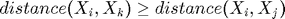
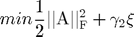
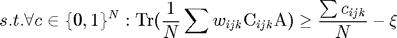
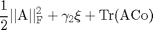
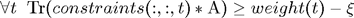

Contents
function W=cuttingPlaneMetricLearning(X,triplet,w,config)
This function implements large scale relatively-paired space analysis with cutting plane
- Column of X is an augmented instance, which may come from any modality;
- Ax and Ay are projection matrix so that Wx=W*Ax and Wy=W*Ay;
- Each row of triplet is of the structure (i,j,k), which means ;
- Each element of w is the coefficient of its corresponding triplet;
- The config contains the parameters and options;
- W=[Wx,Wy] is the projection mapping for both modalities
We solve its equivelent cutting plane refourmation


N=size(triplet,1); if ~isfield(config,'numOuterIter') config.numOuterIter=3; end Delta_ik_o=X(:,triplet(:,1))-X(:,triplet(:,3)); Delta_ij_o=X(:,triplet(:,1))-X(:,triplet(:,2)); [Delta_ik,Delta_ij]=adaptiveSparse(Delta_ik_o,Delta_ij_o); d=size(X,1); W=eye(d); constraint=zeros(d,d,config.numOuterIter); weight=zeros(config.numOuterIter,1); if config.verbose>=2 obj=zeros(config.numOuterIter,1); end if config.verbose>=2 recordCuttingPlane=[]; tCP=tic; end Co=constructPairTerm(Delta_ij,w(:,2)'*(config.param.gamma3/N)); % profile on for iter=1:config.numOuterIter
% substep one: finding most violated-constraits; flag=zeros(N,1); if config.verbose>=1 tic; end flag=adaptiveWeightedLoss(Delta_ik,Delta_ij,W); flag=flag<1; if config.verbose>=1 timeCheck=toc; fprintf('The time for most violated constraint is %f .\n',timeCheck); end % construct constraint; index=find(flag); %length(index) rootW=(sqrt(w(index,1)))'; tmp1=Delta_ik_o(:,index); tmp1=bsxfun(@times,tmp1,rootW); tmp2=Delta_ij_o(:,index); tmp2=bsxfun(@times,tmp2,rootW); tmp=tmp1*tmp1'-tmp2*tmp2'; % tmp=(*Delta_ik_o(:,index)'-Delta_ij_o(:,index)*Delta_ij_o(:,index)'); % toc % tic % tmp1=sumOutterProduct(Delta_ik,Delta_ij,flag); % tmp1=vec2SymmetricM(tmp1,d); % toc % sum(sum(tmp-tmp1)) %weight(iter)=(length(index)/N); weight(iter)=(sum(w(index,1))/N); constraint(:,:,iter)=tmp/N; % substep two: finding the optimal W currently. % we optimize W using its current constraints.


W=dualOpt2(Co,constraint(:,:,1:iter),weight(1:iter),config); if config.optimized % optimized W; end if config.verbose>=2 tic obj(iter)=computeEnergy(W,Delta_ik,Delta_ij,w,config.param.gamma,config.param.gamma3,Co); t=toc(tCP); recordCuttingPlane=[recordCuttingPlane;t,obj(iter)]; timeEnergy=toc; fprintf('The time for energy is %f .\n',timeEnergy); end
end if config.verbose>=2 save([config.prefix,'recordCuttingPlane.mat'],'recordCuttingPlane'); figure plot(recordCuttingPlane(:,1),recordCuttingPlane(:,2)); end % profile viewer
Error using cuttingPlaneMetricLearning (line 16) Not enough input arguments.
end